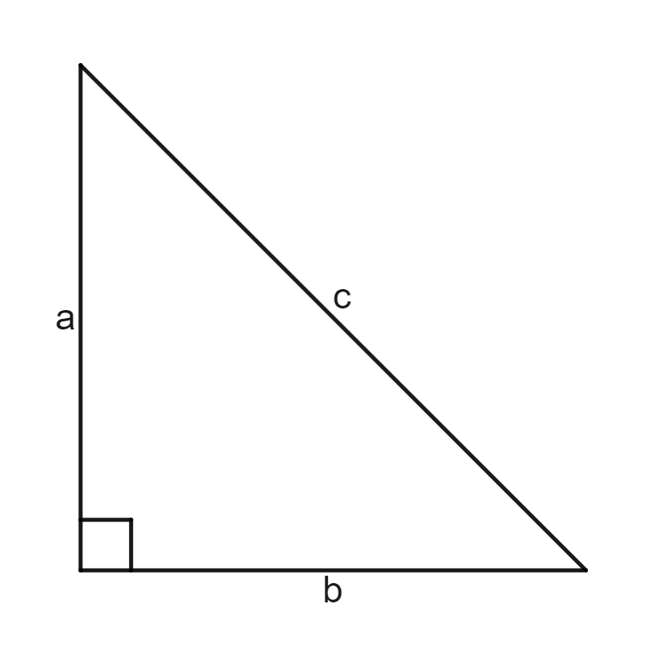
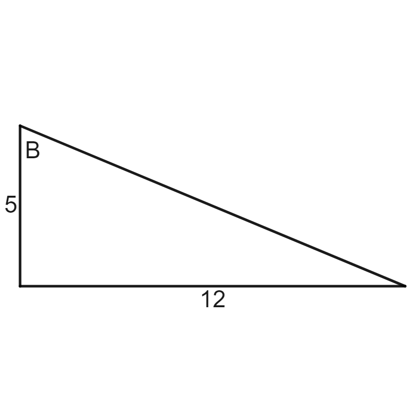

Skip to main content ☰ Contents You! < Prev ^ Up Next > \( \newcommand{\ds}{\displaystyle}
\newcommand{\lrpar}[1]{\left(#1\right)}
\newcommand{\lrbrace}[1]{\left\lbrace #1 \right\rbrace}
\newcommand{\inv}[1]{#1^{-1}}
\newcommand{\R}{\mathbb{R}}
\newcommand{\Z}{\mathbb{Z}}
\newcommand{\dc}{^\circ}
\newcommand{\lt}{<}
\newcommand{\gt}{>}
\newcommand{\amp}{&}
\definecolor{fillinmathshade}{gray}{0.9}
\newcommand{\fillinmath}[1]{\mathchoice{\colorbox{fillinmathshade}{$\displaystyle \phantom{\,#1\,}$}}{\colorbox{fillinmathshade}{$\textstyle \phantom{\,#1\,}$}}{\colorbox{fillinmathshade}{$\scriptstyle \phantom{\,#1\,}$}}{\colorbox{fillinmathshade}{$\scriptscriptstyle\phantom{\,#1\,}$}}}
\)
Section 6 F. Trigonometry Review
Subsection 6.1 Trigonometric Ratios
Supplements XYZ Sections: All
Subsubsection 6.1.1 Definitions
Example 6.1.1 .
Consider a circle centered at the origin with radius \(r\text{.}\) Let \((x,y)\) be any point on the circle with central angle \(\theta\text{.}\)
The equation of the given circle is \(x^2+y^2 = r^2\)
The 6 trigonometric ratios are:
\(\cos\theta = \dfrac{x}{r}\) \(\sin\theta = \dfrac{y}{r}\) \(\tan\theta = \dfrac{y}{x}\)
\(\sec\theta = \dfrac{r}{x}\) \(\csc\theta = \dfrac{r}{y}\) \(\cot\theta = \dfrac{x}{y}\)
Notice that \(\cos\theta\) and \(\sec\theta\) are reciprocals. Likewise, \(\sin\theta\) and \(\csc\theta\) are reciprocals. Lastly, \(\tan\theta\) and \(\cot\theta\) are reciprocals.
Subsubsection 6.1.2 Unit Circle
Example 6.1.2 .
The unit circle is a circle of radius 1 centered at the origin. For any point \((x,y)\) on the unit circle with central angle \(\theta\text{,}\) we can simplify our trig ratios using \(r=1\) to:
\begin{equation*}
\cos\theta = x \qquad \sin\theta = y \qquad \tan\theta = \dfrac{y}{x}
\end{equation*}
Let's use the unit circle to find some trig values:
\(\cos(0^{\circ})=\) \(\cos(60^{\circ})=\) \(\cos(\pi)=\) \(\cos\lrpar{\dfrac{3\pi}{2}}=\)
\(\sin(0^{\circ})=\) \(\sin(60^{\circ})=\) \(\sin(\pi)=\) \(\sin\lrpar{\dfrac{3\pi}{2}}=\)
\(\tan(0^{\circ})=\) \(\tan(60^{\circ})=\) \(\tan(\pi)=\) \(\tan\lrpar{\dfrac{3\pi}{2}}=\)
Solution .
\(\cos(0^{\circ})=1\) \(\cos(60^{\circ})=\dfrac{1}{2}\) \(\cos(\pi)=-1\) \(\cos\lrpar{\dfrac{3\pi}{2}}=0\)
\(\sin(0^{\circ})=0\) \(\sin(60^{\circ})=\dfrac{\sqrt{3}}{2}\) \(\sin(\pi)=0\) \(\sin\lrpar{\dfrac{3\pi}{2}}=-1\)
\(\tan(0^{\circ})=0\) \(\tan(60^{\circ})=\sqrt{3}\) \(\tan(\pi)=0\)
\(\tan\lrpar{\dfrac{3\pi}{2}}=\) undefined
Example 6.1.3 .
Use the unit circle to find the exact values of each of the following:
\(\displaystyle \cos (120^{\circ})\)
\(\displaystyle \cos\lrpar{\dfrac{7\pi}{4}}\)
\(\displaystyle \sin (90^{\circ})\)
\(\displaystyle \sin\lrpar{\dfrac{4\pi}{3}}\)
\(\displaystyle \tan (90^{\circ})\)
\(\displaystyle \tan \lrpar{\dfrac{3\pi}{4}}\)
Solution .
\(\displaystyle \cos (120^{\circ}) = -\dfrac{1}{2}\)
\(\displaystyle \cos\lrpar{\dfrac{7\pi}{4}}= \dfrac{\sqrt{2}}{2}\)
\(\displaystyle \sin (90^{\circ})=1\)
\(\displaystyle \sin\lrpar{\dfrac{4\pi}{3}}=-\dfrac{\sqrt{3}}{2}\)
\(\tan (90^{\circ})=\) undefined
\(\displaystyle \tan \lrpar{\dfrac{3\pi}{4}}=-1\)
Subsubsection 6.1.3 Quotient and Reciprocal Identities
Example 6.1.4 .
Quotient Identities:
\begin{equation*}
\tan\theta = \dfrac{\sin\theta}{\cos\theta} \qquad \cot\theta = \dfrac{\cos\theta}{\sin\theta}
\end{equation*}
Reciprocal Identities:
\begin{equation*}
\sec\theta = \dfrac{1}{\cos\theta} \qquad \dfrac{1}{\csc\theta} = \dfrac{1}{\sin\theta} \qquad \cot\theta = \dfrac{1}{\tan\theta}
\end{equation*}
We know that \(\cos (30^{\circ}) = \dfrac{\sqrt{3}}{2}\) and \(\sin (30^{\circ}) = \dfrac{1}{2}\text{.}\) Use the quotient and reciprocal identities to find \(\tan (30^{\circ})\text{,}\) \(\cot (30^{\circ})\text{,}\) \(\sec (30^{\circ})\text{,}\) and \(\csc (30^{\circ})\)
Solution .
\begin{align*}
\tan (30^{\circ}) \amp = \dfrac{\sqrt{3}}{3}\\
\cot (30^{\circ}) \amp = \sqrt{3} \\
\sec (30^{\circ}) \amp = \dfrac{2\sqrt{3}}{3}\\
\csc (30^{\circ}) \amp = 2
\end{align*}
Example 6.1.5 .
We know that \(\cos(240^{\circ}) = -\dfrac{1}{2}\) and \(\sin (240^{\circ}) = - \dfrac{\sqrt{3}}{2}\text{.}\) Use the quotient and reciprocal identities to find:
\(\displaystyle \tan (240^{\circ})\)
\(\displaystyle \cot (240^{\circ})\)
\(\displaystyle \sec (240^{\circ})\)
\(\displaystyle \csc (240^{\circ})\)
Solution .
\(\displaystyle \tan (240^{\circ}) = \sqrt{3}\)
\(\displaystyle \cot (240^{\circ})\dfrac{\sqrt{3}}{3}\)
\(\displaystyle \sec (240^{\circ})=-2\)
\(\displaystyle \csc (240^{\circ})=-\dfrac{2\sqrt{3}}{3}\)
Subsection 6.2 Solving Trig Equations
Subsubsection 6.2.1 Solving Basic Trig Equations
Example 6.2.1 .
Use the unit circle to solve the following basic trig equations on the interval \(0\leq \theta \leq 2\pi\text{.}\)
\(\displaystyle 2\sin\theta = \sqrt{3}\)
\(\displaystyle -2\cos\theta + 7 = 8\)
\(\displaystyle \sqrt{2}\cos\theta - 1 = 0\)
\(\displaystyle \tan\theta + 1 = 0\)
Solution .
\(\displaystyle \theta = \dfrac{\pi}{3},\dfrac{2\pi}{3}\)
\(\displaystyle \theta = \dfrac{2\pi}{3},\dfrac{4\pi}{3}\)
\(\displaystyle \theta = \dfrac{\pi}{4},\dfrac{7\pi}{4}\)
\(\displaystyle \theta = \dfrac{3\pi}{4},\dfrac{7\pi}{4}\)
Example 6.2.2 .
Solve the following basic trig equations on the interval \(0\leq \theta \leq 2\pi\)
\(\displaystyle \cos\theta = 0\)
\(\displaystyle 2\sin\theta + 4 = 3\)
\(\displaystyle 2\sin\theta = \sqrt{2}\)
\(\displaystyle \tan\theta - \sqrt{3} = 0\)
\(\displaystyle 5\cos\theta = -5\)
Solution .
\(\displaystyle \theta = \dfrac{\pi}{2},\dfrac{3\pi}{2}\)
\(\displaystyle \theta = \dfrac{7\pi}{6},\dfrac{11\pi}{6}\)
\(\displaystyle \theta = \dfrac{\pi}{4}, \dfrac{3\pi}{4}\)
\(\displaystyle \theta = \dfrac{\pi}{3},\dfrac{4\pi}{3}\)
\(\displaystyle \theta = \pi\)
Subsubsection 6.2.2 Solving Multiple Angle Trig Equations
Example 6.2.3 .
Use the unit circle to solve the following trig equation on the interval \(0\leq\theta\leq 2\pi\)
\(2\sin(2\theta) = \sqrt{3}\)
Solution . \(\theta = \dfrac{\pi}{6}, \dfrac{7\pi}{6}, \dfrac{\pi}{3}, \dfrac{4\pi}{3}\)
Example 6.2.4 .
Sovle the following trig equation on the interval \(0\leq\theta \leq 2\pi\text{.}\)
\begin{equation*}
\cos (3\theta) = -\dfrac{1}{2}
\end{equation*}
Solution . \(\theta = \dfrac{2\pi}{9},\dfrac{4\pi}{9},\dfrac{8\pi}{9},\dfrac{10\pi}{9},\dfrac{14\pi}{9},\dfrac{16\pi}{9}\)
Subsubsection 6.2.3 Solving Quadratic Trig Equations
Example 6.2.5 .
Solve the following trig equations on the interval \(0\leq\theta\leq 2\pi\)
\(\displaystyle \sin^2\theta - 2\sin\theta - 3 = 0\)
\(\displaystyle 4\cos^2\theta - 6\cos\theta = -2\)
Solution .
\(\displaystyle \theta = \dfrac{\pi}{2}\)
\(\displaystyle \theta = 0,\dfrac{\pi}{3},\dfrac{7\pi}{3}\)
Example 6.2.6 .
Solve the following trig equation on the interval \(0\leq \theta 2\pi\text{.}\)
\begin{equation*}
\cos^2\theta + 6\cos\theta + 5 = 0
\end{equation*}
Example 6.2.7 .
Solve the following trig equation on the interval \(0\leq \theta 2\pi\text{.}\)
\begin{equation*}
6\sin^2\theta - 3\sin\theta = 0
\end{equation*}
Solution . \(\theta = 0,\dfrac{\pi}{6},\dfrac{5\pi}{6},\pi,2\pi\)
Example 6.2.8 .
Solve the following trig equation on the interval \(0\leq \theta 2\pi\text{.}\)
\begin{equation*}
2\sin^2\theta - \sin\theta - 1 = 0
\end{equation*}
Solution . \(\theta = \dfrac{\pi}{2},\dfrac{7\pi}{6},\dfrac{11\pi}{6}\)
Subsection 6.3 Right Triangle Trig
Subsubsection 6.3.1 Pythagorean Formula
Example 6.3.1 .
A right triangle is a triangle with a right angle/\(90^{\circ}\) angle. The side opposite the right angle/\(90^{\circ}\) angle is called the hypotenuse . The other two sides are called legs . The relationship between the hypotenuse, \(c\text{,}\) and legs, \(a\) and \(b\text{,}\) of a right triangle is given by the Pythagorean Theorem :
\begin{equation*}
a^2 + b^2 = c^2
\end{equation*}

What is the hypotenuse of the above right triangle if \(a=0.9\) and \(b = 1.2\text{?}\)
Example 6.3.2 .
Find the missing side length for the given triangle.
Subsubsection 6.3.2 SOHCAHTOA
Example 6.3.3 .
For an angle \(\theta\) in a right triangle:
\begin{equation*}
\sin\theta = \dfrac{\text{opposite side}}{\text{hypotenuse}} \qquad \cos\theta = \dfrac{\text{adjacent side}}{\text{hypotenuse}} \qquad \tan\theta = \dfrac{\text{opposite side}}{\text{adjacent side}}
\end{equation*}
Find \(\sin\theta\text{,}\) \(\cos\theta\text{,}\) and \(\tan\theta\) if the side opposite \(\theta\) is 4 and the side adjacent to \(\theta\) is 5.
Solution .
\(\sin\theta = \dfrac{4}{\sqrt{41}}\text{,}\) \(\cos\theta = \dfrac{5}{\sqrt{41}}\text{,}\) and \(\tan\theta = \dfrac{4}{5}\)
Example 6.3.4 .
Given the right triangle below, find \(\sin (B)\text{,}\) \(\cos (B)\text{,}\) and \(\tan (B)\text{.}\)

Solution .
\(\sin (B) = \dfrac{12}{13}\text{,}\) \(\cos(B) = \dfrac{5}{13}\text{,}\) \(\tan (B) = \dfrac{12}{5}\)
Subsection 6.4 Law of Sines & Law of Cosines
Subsection 6.5 Graphs of Trig Functions
Subsection 6.6 Inverse Trigonometric Functions